Physical Object Understanding with a Physically Controllable World Model
Read our CVPR 2026 Highlight paper on arXiv →We present a visual world model, learned from raw video, that can be natively prompted with physical interactions. This physical prompting interface turns out to be surprisingly powerful: from a single model, a broad spectrum of object understanding capabilities emerges zero-shot, spanning object discovery, 3D manipulation, articulated part segmentation, and reasoning about physical support relationships. For details on the architecture and training, see our PSIv0.5 release post.
The need for a “native prompting” mechanism for vision
Large foundation models learn rich visual representations, but how do you query them? In NLP, the answer is straightforward: you prompt in natural language. But for vision, it is far less clear. Vision models like DINO, JEPA, and MAE instead require task-specific supervised probes, and multimodal systems like GPT-4V, Cosmos, and Sora can accept language prompts but struggle with physical reasoning—as shown below, GPT-4V cannot reliably predict what happens when you push an object. What is needed is a “native” interface: the ability to query a model in its own modalities—images, motions, forces—so you can ask what would happen if I pushed here? by showing it a push and reading off the answer in pixels, with no additional training.
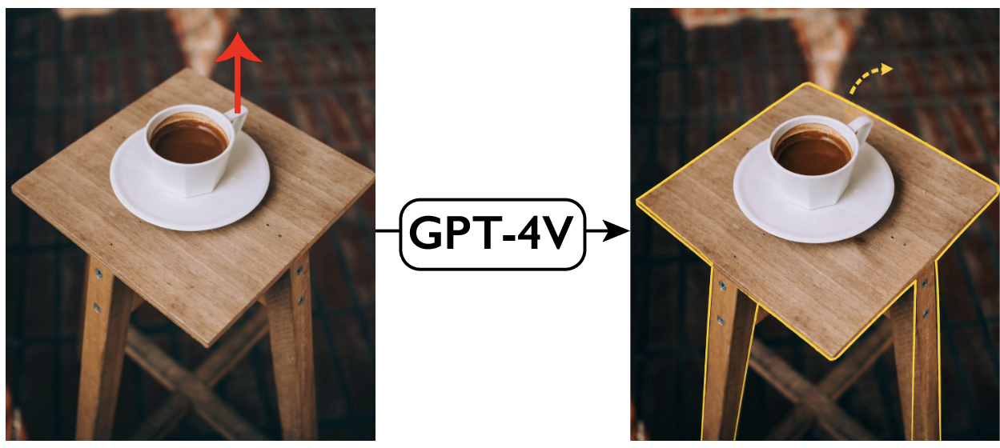
Embodied agents need causal reasoning about interventions, not just scene descriptions. In robotics, agents must reason not only about what is present in a scene, but also about what would happen under hypothetical actions. Before executing a manipulation, a robot should be able to ask questions such as: What would happen if I push this object?, What if I grasp it from a different location?, or What objects would move if I apply a force here? Answering such questions requires a model that supports causal reasoning and intervention-based simulation rather than passive scene description alone.
Biological organisms already solve this problem—without language. Human infants and non-human primates develop a remarkably rich understanding of the physical world—recognizing objects, predicting the consequences of actions, and performing a wide variety of real-world tasks—all without access to natural language. Understanding how this kind of physical intelligence emerges from purely sensorimotor experience is a fundamental question in cognitive science and neuroscience. Building computational models that exhibit similar capabilities—learning about objects and their physics through vision and interaction rather than language—can help answer some of these questions while also advancing AI systems that reason natively about the physical world.
Building a physically controllable visual world model
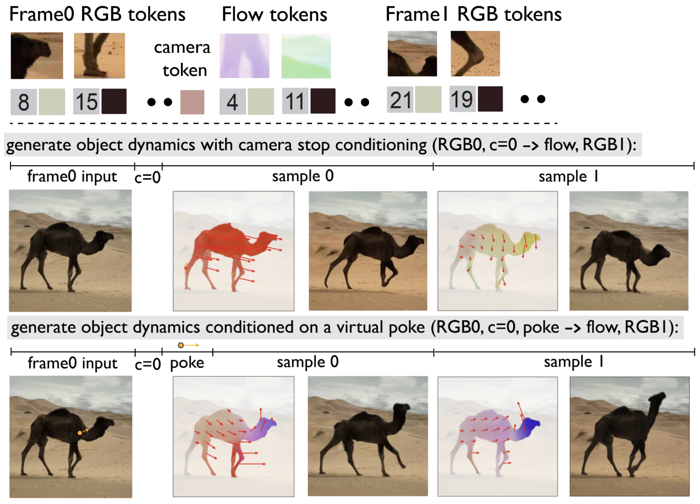
Our world model is an autoregressive transformer trained on video. Each training sequence is laid out as: Frame 0 RGB tokens, followed by camera tokens, then flow tokens, and finally Frame 1 RGB tokens. The model learns to predict the next token in this sequence, and a model trained this way naturally supports various inference pathways for physical control:
- Generate object dynamics: Provide the input frame and set camera motion to zero. The model generates plausible flow and a future RGB frame, revealing how objects might naturally move in the scene.
- Poke-conditioned generation: Additionally provide a sparse “virtual poke”—a few flow vectors specifying where and how you want to push. The model completes the dense flow field and generates the resulting future frame, simulating the effect of that physical interaction.
Because the model outputs distributions rather than point estimates, we can sample multiple plausible futures from the same observation—a property that turns out to be critical for discovering objects and their physical structure.
Application 1: Motion probability maps
A natural first question to ask is: which parts of the scene are movable? For each spatial location we query \(\Psi\) for the probability that the flow there exceeds a small threshold—in other words, the probability that the point would move. Because the model can answer these queries in parallel across all locations, we obtain a dense motion probability map in a single forward pass. We condition on zero camera motion so that the map reflects only physical interaction, not camera effects.
Application 2: Expected motion maps
While the motion probability map tells us which parts of the scene will move, we often want to know where they move. For this we compute the expected motion at each location: the probability-weighted average of all possible flow vectors. This produces a dense displacement field that reveals both the extent of motion and material properties—rigid objects show uniform responses across their extent, while deformable objects like cloth show highly localized responses near the poke point.
Application 3: Sequential generation of plausible futures
The parallel motion statistics above treat each location independently. To capture how different parts of the scene move together—for example, how the legs of an animal follow when its body turns—we switch to sequential generation. Here, \(\Psi\) samples tokens one at a time, conditioning each on everything generated so far. This produces full flow fields that respect the spatial dependencies of complex objects. From each sampled flow, the model can then render the resulting appearance, giving us a complete imagined future of the scene. By sampling with different random seeds, we obtain multiple diverse yet physically plausible futures from the same input image.
Application 4: Poke-conditioned sequential generation
When a motion is specified for a part of the object (a virtual poke), PSI generates diverse yet physically consistent responses for the rest of the body. Below, a poke is applied to the head of the bear, and the model completes the flow field—each seed producing a different plausible whole-body motion.
Application 5: Movable object discovery
These diverse motion samples let us probe the causal structure of the scene. The key idea: if we apply a virtual poke at a point and ask \(\Psi\) to complete the flow field, the regions that consistently move in the same direction as the poke belong to the same physical object. By repeating this with multiple poke directions and averaging the motion correlations, we obtain a clean segmentation of the movable object—no labels or class-specific training required.
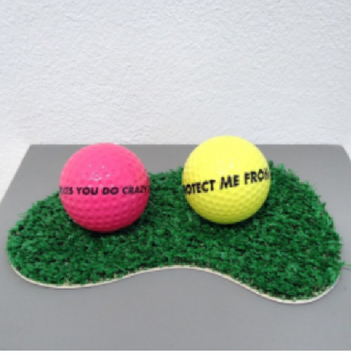
Input image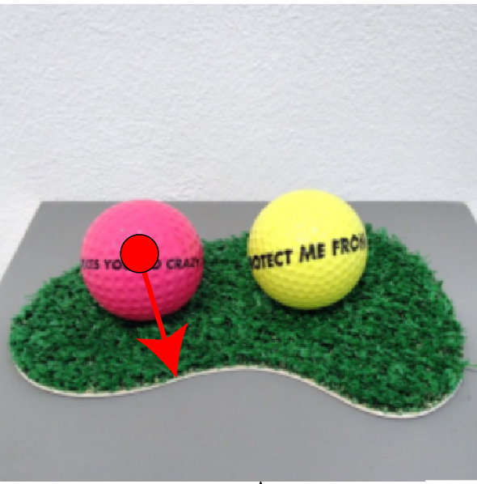
Sample & poke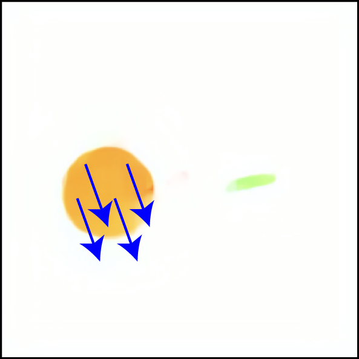
Flow completion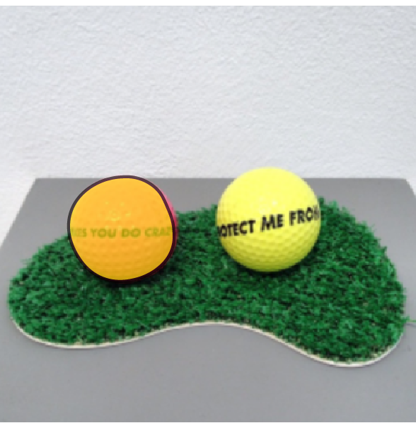
Threshold → segment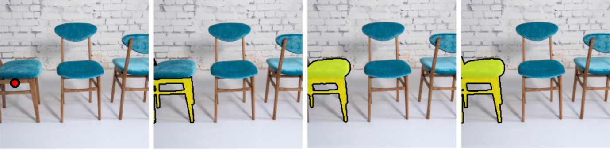
SAM2 often segments object subparts based on texture that do not move independently. PSI obtains segments that align better with the notion of what moves together in the physical world.
| Method | Average Recall | mIoU |
|---|---|---|
| CutLER | 0.321 | 0.446 |
| ProMerge | 0.342 | 0.449 |
| Counterfactual World Models (CWM) | 0.327 | 0.481 |
| MaskFormer | 0.439 | 0.506 |
| Flow Poke Transformer (FPT) | 0.368 | 0.566 |
| SAM2 | 0.482 | 0.623 |
| PSI (ours) | 0.541 | 0.681 |
We evaluate on SpelkeBench, a benchmark for movable object segmentation. PSI achieves state-of-the-art results, outperforming both supervised methods like SAM2 and self-supervised baselines including CWM and FPT.
Application 6: 3D object manipulation
Having discovered movable objects, we can manipulate them in 3D. The pipeline extracts a segment with a point prompt, computes a dense flow field from a 3D edit command, and renders the result using PSI. We find that our segments yield better physical manipulation compared to those from SAM, which often segments subparts of objects that do not move independently.
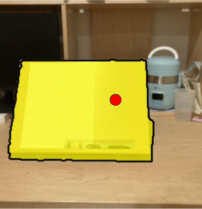
“Imagined” Flow Map
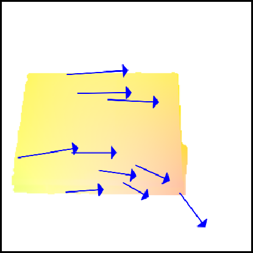
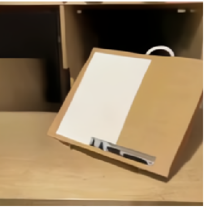
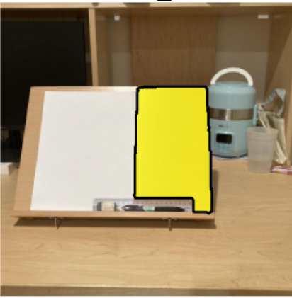
“Imagined” Flow Map
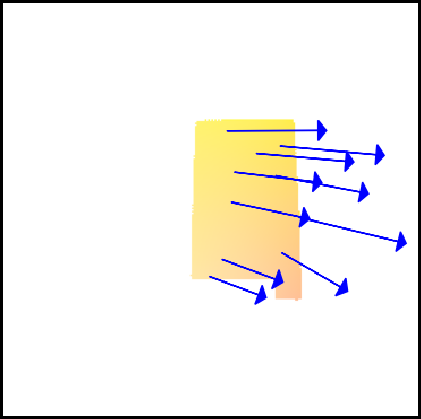
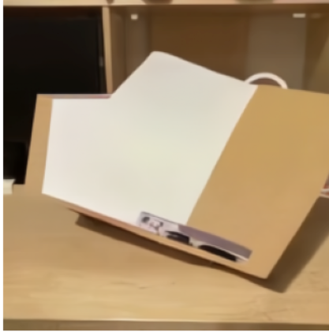
| Method | LPIPS ↓ | SSIM ↑ | EA ↑ |
|---|---|---|---|
| PerceptionAsControl (PasC) | 0.195 | 0.672 | 0.679 |
| DiffusionHandles | 0.364 | 0.555 | 0.576 |
| DiffusionAsShader | 0.194 | 0.707 | 0.640 |
| PSI | 0.161 | 0.736 | 0.776 |
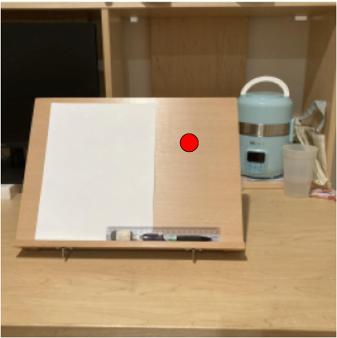
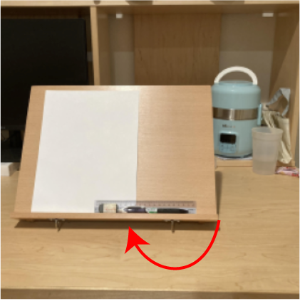
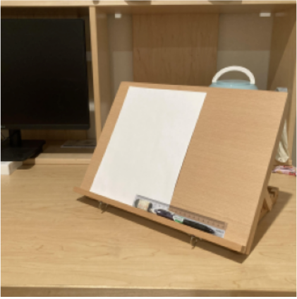
PSI achieves state-of-the-art object manipulation performance on 3DEditBench. More importantly, the segments extracted from PSI consistently outperform SAM, improving realism when used across diverse image editing models (PerceptionAsControl, DiffusionHandles, Diffusion-as-Shader). SAM-generated masks capture only sub-parts of objects, resulting in fragmented or implausible edits.
Application 7: Reasoning about physical relationships
Finally, we show that our world model can reason about physical relationships between objects. Expected displacement maps computed with virtual poke conditioning reveal information about support hierarchies within the scene, where we find that poking the supporting object moves the supported object.
By repeating this analysis for every pair of objects in the scene, we build a directed support graph where each edge captures how much one object's motion influences another. This enables Visual Jenga: we iteratively select the object that influences the fewest others (i.e. the safest to remove), apply a large virtual poke to remove it, and update the graph. The model thus discovers the physical support hierarchy of the scene entirely from its learned dynamics.
Looking ahead
We can think of the applications shown above as a first glimpse of what becomes possible when a world model speaks the language of physics rather than words. This lays the groundwork for physically controllable world models, and the potential applications extend well beyond what we have demonstrated.
In robotics, such a model could serve as a physical imagination engine for planning: before executing a grasp or a push, a robot could mentally simulate the outcome, predict which objects will move, and choose actions accordingly. Task planning in cluttered environments could leverage motion probability maps to identify which objects need to be cleared, and poke-conditioned generation to evaluate candidate manipulation strategies. The model’s ability to discover movable objects and reason about support relationships could enable robots to perform multi-step rearrangement tasks—such as unstacking, sorting, or assembling—without needing object-specific training.
More broadly, physically controllable world models open a path toward embodied agents that learn about objects the way biological organisms do: not through labels or language, but through interaction and observation.
Citation
@misc{venkatesh2026physicalobjectunderstandingphysically,
title={Physical Object Understanding with a Physically Controllable World Model},
author={Rahul Venkatesh and Klemen Kotar and Lilian Naing Chen and Wanhee Lee and Gia Ancone and Seungwoo Kim and Luca Thomas Wheeler and Jared Watrous and Honglin Chen and Daniel Bear and Stefan Stojanov and Daniel LK Yamins},
year={2026},
eprint={2606.00439},
archivePrefix={arXiv},
primaryClass={cs.CV},
url={https://arxiv.org/abs/2606.00439},
}